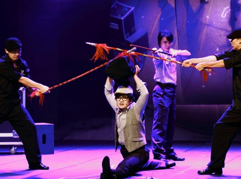
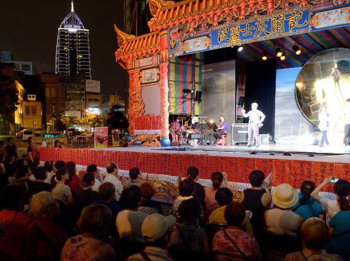
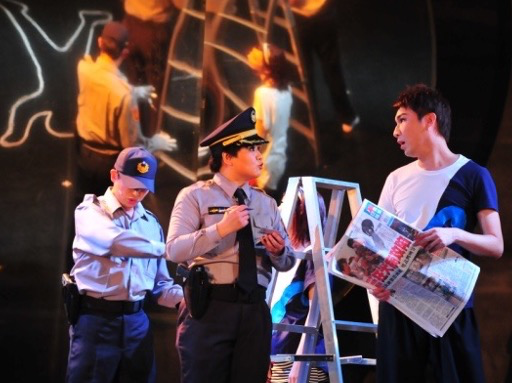

WORK · 2013
《波麗士灰闌記》
編劇・導演・主演

搖滾新戲曲：把「灰闌」帶到當代臺灣
作品取材自布萊希特《高加索灰闌記》，再向更早的「灰闌」故事傳統回望，以戲中戲、命案調查與現代社會互相折射。歌仔戲、豫劇、搖滾音樂劇與現代劇場語彙同台，形成奇巧早期「搖滾新戲曲」的重要代表。
2013 年受邀擔綱臺北藝術節開幕演出。創作不只在形式上混融劇種，也把正義、制度與真相的追問直接放回當時的臺灣社會。
SYNOPSIS
劇情與結構
公演在即，劇團演員竟陳屍舞臺。菜鳥警探與老練警隊隊長追查命案，現代的「粉筆圈」與戲中戲裡的古老「灰闌」逐漸重疊。劇中一面演出布萊希特的爭子寓言，一面追索現實命案；兩條敘事線互相照見，讓「誰有資格定義真相」成為核心問題。
作品最後不以大團圓收束：戲中的正義可以被實踐，現實中的權力結構卻未必因此被改變。灰暗結局配上高速、奔放的音樂，反而把問題推回觀眾面前。
一筆灰闌圈出古今正義；一個命案現場，反問我們所相信的真相。
STAGE IMAGES
演出劇照



CREATION
創作方法
作品運用現代戲劇的多線敘事、後設與戲中戲，讓演員能在傳統身段、現代角色與不同語言／聲腔之間切換。跨劇種在這裡不只是「混搭」，而是用來處理同一個時代問題的多重觀看方式。
CRITICAL RESPONSE
評論節錄
奇巧劇團不負臺北藝術節開幕演出的重託，從形式到內容，都為這個時代做了最佳見證...編導劉建幗較前行的歌仔戲改革有勝出之處，就是她不僅在戲劇表演上玩耍現代趣味、或是翻轉某些題材的詮釋觀點，更為戲劇注入具有現實感的現代意識，讓歌仔戲真正成為當代台灣最有代表性的劇種。
詩人導演 鴻鴻評《波麗士灰闌記》以外台歌仔戲的形式，偷渡諷刺時事內容。在警察大樓前廣場揭露警界內容，影射當朝弊案。群聚劇場的氛圍，奪回公共空間的政治性。
台新藝術獎提名觀察人 林于竝 評《波麗士灰闌記》